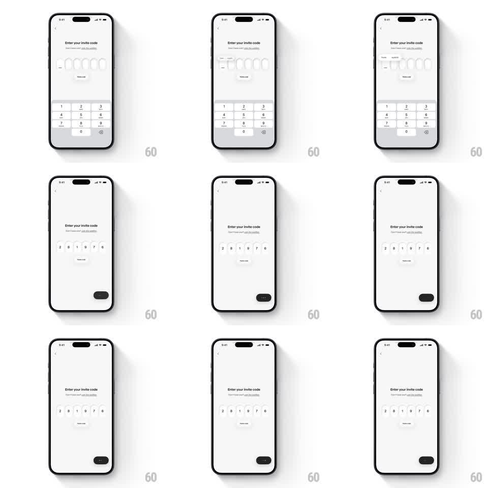

Media
Frame-by-frame

Rebuild this interaction 1:1: Wabi's invite code flow - typing the 6-digit code fills underline slots, and tapping the black "Next" button morphs it into a compact dark loading pill that resolves the step.

Rebuild this interaction 1:1: Wabi's invite code flow - typing the 6-digit code fills underline slots, and tapping the black "Next" button morphs it into a compact dark loading pill that resolves the step. ## Integration Integration: stack-agnostic spec - springs given as stiffness/damping, timed motions as duration + curve; map every value to your framework and animation library of choice. ## Scene Minimal light screen: back chevron, "Enter your invite code" title with a "Don't have one? Join the waitlist" link, six underline code slots (filled: 281976), a "Paste code" chip, and the numeric keypad. Complete state: keypad dismissed, a black "Next" pill bottom-right. ## Motion spec Pattern: inline code entry with button-to-loader morph, ~350ms. - Entry: each digit pops into its slot (scale 0.6 -> 1, spring ~420/20) and the caret advances; the keypad's tapped key flashes (100ms). - Complete: on the 6th digit the keypad slides down (250ms) and the "Next" pill slides up from the bottom-right (300ms, ease-out). - Morph: tapping Next collapses the pill to a compact dark capsule (width shrink, 250ms, ease-in-out) whose label crossfades to a spinner (150ms); the capsule pulses subtly (scale 1 -> 1.04, 600ms loop) while validating. - Error: the code slots shake (+-6px, 3 cycles, 300ms) and clear one by one right-to-left (60ms stagger). ## Calibration - The loader capsule keeps the Next pill's exact position and height - it morphs, it doesn't swap. - Slots show digits in large mono-style type; empty slots are bare underlines. ## Reduced motion Digits appear instantly; the pill fades to the spinner (200ms). ## Don't miss - The paste chip autofills all six slots with a left-to-right cascade (40ms stagger). - The loading capsule never navigates away by itself - it waits for the result.